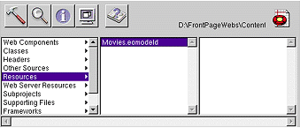
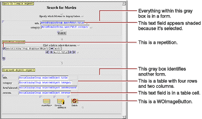
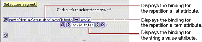
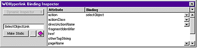
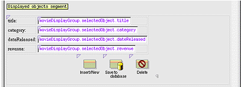

| PATH |

Whenever you create a new project, Project Builder populates the project with ready-made files and directories. What it includes depends on the choices you make in the wizard, so this project has a set of files different from those of the GuestBook project.
Like GuestBook, the Movies project contains a Main component
(Main.wo). It also includes some
files that the GuestBook doesn't have: a model file, and images
used by the Main component.
In Project Builder, navigate to the Movie project's Resources
category. This is where the model, named Movies.eomodeld,
is located. Later in this tutorial you'll use EOModeler to open
the model and enhance it.

Navigate to the Web Server Resources category. This is where
your project's images are located: DBWizardUpdate.gif, DBWizardDelete.gif,
and DBWizardInsert.gif,
for the "Save to database," "Delete", and "Insert/New"
buttons, respectively.
The biggest difference between the GuestBook and Movies projects
is their Main components. Whereas the Main component you created
for the GuestBook project was empty, the Main component for the
Movies project contains a fully functional user interface. Also,
the Main.java class already
contains code that supplies the component with behavior. In the
next sections, you'll examine the Movies project's Main.wo component
and its Main.java class.
Main.wo in
Project Builder's Web Components category to open the Main component
in WebObjects Builder.There are four variables in the object
browser: the application and session variables that
are available in all components and two others, movie and movieDisplayGroup.
The movie variable
is an enterprise object that represents a row fetched from the MOVIE
table. movieDisplayGroup is
a display group-an object that interacts
with a database, indirectly through classes in the Enterprise Objects
Framework. Display groups are used to fetch, insert, update, and
delete enterprise objects that are associated with a single entity.
The entity of movieDisplayGroup is
Movie, which you specified in the wizard's "Choose an entity"
page.
Main.java to
see how movie is declared.The movie declaration
(shown below) declares movie to
be an EOEnterpriseObject-a Java interface that describes the general
behavior that all enterprise objects must have.
/** @TypeInfo Movie */
protected EOEnterpriseObject movie;At
runtime, movie is a EOGenericRecord
object. Recall that EOGenericRecord is used to represent enterprise
objects unless you specify a custom class. Since you didn't check the
"Use custom enterprise objects" box in the wizard's "Choose
what to include in your model" page, your application uses EOGenericRecord
for all its entities.
The comment (/** @TypeInfo Movie
*/) is used by WebObjects Builder to identify movie's
entity (Movie). Knowing the entity allows WebObjects Builder to
display movie's attributes
(category, dateReleased,
and so on). You can see movie's
attributes if you select the movie variable
in the WebObjects Builder's object browser.
movieDisplayGroup declaration
in Main.java.The
declaration (shown below) declares movieDisplayGroup to
be a WODisplayGroup.
protected WODisplayGroup movieDisplayGroup;
Also
note the comment explaining how movieDisplayGroup is
initialized. The Main.java class
doesn't have any code to create and initialize the display group.
Instead, it's instantiated from an archive file, Main.woo,
that's stored in the Main.wo component.
You shouldn't edit woo files
by hand; they're maintained by WebObjects Builder. The woo file archiving
mechanism is described in more detail later in "Specifying a Sort Order".
Now examine the bindings of your Main component in WebObjects Builder.

Remember that you can use WebObjects Builder's Inspector
to see the bindings for an element's attributes. Simply select
the element to inspect, and click the
![[image: ../Art/inspector.gif]](../Art/inspector.gif) button to open the Inspector.
button to open the Inspector.
In the query part of the component, movieDisplayGroup.queryMatch.title is
bound to the title text field. There are similar bindings to the
category text fields. The queryMatch bindings
allow users to specify search criteria to use when movieDisplayGroup next
fetches movies. The Match button is bound to movieDisplayGroup.qualifyDataSource,
that actually performs the fetch.
For example, to display all comedies, a user types "Comedy"
in the Category text field, and clicks the Match button. movieDisplayGroup then
refetches, selecting only movies whose category values
are set to Comedy.
In the repetition part of the component where matching movies
are listed, movieDisplayGroup.displayedObjects is
bound to a repetition. More specifically, displayedObjects is
bound to the repetition's list attribute,
providing an array of movies for the repetition to iterate over.
The movie variable
is bound to the repetition's item attribute
to hold each movie in turn, and movie.title is
bound to the string element inside the repetition. These bindings produce
a list of movie titles.

The repetition's string element is enclosed in a hyperlink. By clicking a movie title, the user selects the corresponding movie.
Its action attribute
is bound to the action method selectObject.

Main.java class
to see how the selectObject method
is implemented.The method (shown below) simply sets the selected
object of movieDisplayGroup to
the movie the user clicked.
public void selectObject() { movieDisplayGroup.selectObject(movie); }The text fields in the editing part are all bound to attributes
of the movieDisplayGroup object's selectedObject-the
movie on which the user clicked. Typing new values into these fields
updates the Movie enterprise object. To actually save the updated
values to the database, the user must click the "Save to database"
button.

Its action attribute
is bound to the action method saveChanges.
Main.java class
to see how saveChanges is
implemented.The method (shown below with comments omitted)
simply saves any changes that have been made to movieDisplayGroup's
objects to the database.
public void saveChanges() throws Exception {
try {
this.session().defaultEditingContext().saveChanges();
}
catch (Exception exception) {
NSLog.err.appendln("Cannot save changes ");
throw exception;
}
}this.session() returns
a Session object that represents a connection to the application by
a single user. A Session object provides access to an EOEditingContext
object. The expression
this.session().defaultEditingContext().saveChanges();sends
a saveChanges message
to the Session's defaultEditingContext.
This default EOEditingContext object manages graphs of objects fetched
from the database, and all changes to the database are saved through
it. For more information, see the EOEditingContext class specification
in the Enterprise Objects Framework Reference.
An
EOEditingContext's saveChanges method
uses other Enterprise Objects Framework objects to analyze its network
of enterprise objects (Movie objects referenced by the application)
for changes and then to perform a set of corresponding operations
in the database. If an error occurs during this process, saveChanges throws
an exception. The Main.java saveChanges method
simply raises the exception, having the effect of returning a diagnostic
page. You could return an error page that explains the reason for the
save failure instead, but the application in this tutorial uses
the default behavior.
action attributes
are bound to.They are bound to the movieDisplayGroup.insert and movieDisplayGroup.delete methods
respectively. The WODisplayGroup insert method
creates a new enterprise object, then inserts it into the display
group's list of objects just past the current selection. The WODisplayGroup delete method
deletes the display group's selected object. These changes happen
only in memory-not in the database. To actually insert a new row
in the database (or delete a row), the user must click the "Save
to database" button, invoking saveChanges on
the session's EOEditingContext. The editing context analyzes the
enterprise objects in memory; determines if any objects have been
added, updated, or deleted; and then executes database operations
to sync the database with the application.
© 2001 Apple Computer, Inc.